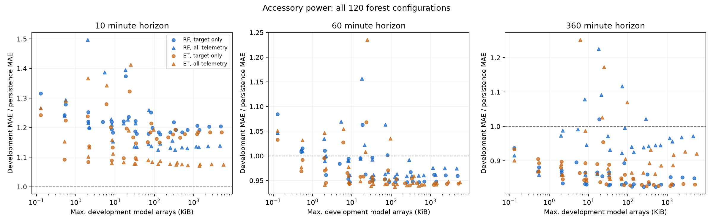
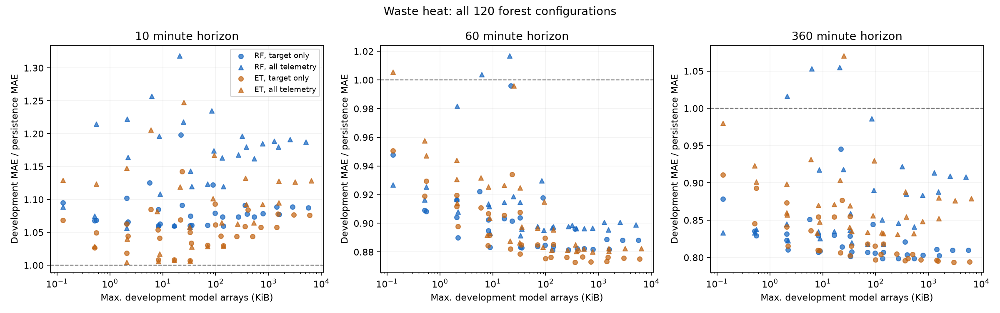

Compact forests retain most of the forecasting accuracy of larger forests. The shared-model candidates below each predict all five horizons. Their 30-minute to six-hour errors improve on persistence; ten-minute forecasting offers no convincing benefit. The earlier boosted-tree and Ridge models remain competitive and often better.
| Compact shared model | Trees / depth | Arrays (KiB) | One-hour MAE | Gain vs persistence | Six-hour MAE | Gain vs persistence |
|---|---|---|---|---|---|---|
| Accessory power — Extra Trees | 16 / 6 | 31.0 | 42.327 kW | 10.1% | 53.699 kW | 16.0% |
| Waste heat — Extra Trees | 16 / 4 | 8.8 | 1.479 MW | 5.6% | 1.909 MW | 17.6% |
These are exploratory results on the previously examined final period. Array sizes exclude firmware and working memory. The exported C inference agrees with Python forecasts on checked samples; ESP32 deployment and energy consumption have not been measured.
Random forests and Extra Trees for accessory power and calculated waste heat. Each family is tested at 1, 4, 16, 64, 128 and 256 trees; depth limits 2, 4, 6, 8 and 12; and two input sets: target history plus calendar, or all eleven available telemetry channels plus calendar. This gives 120 configurations per target.
All forests use six hours of lag and summary features, minimum 10 samples per leaf, 70% features per split and seed 42. Both families share these settings; random forests bootstrap, while Extra Trees use their default non-bootstrap random splits. Five horizons are predicted jointly. This is a bounded capacity sweep, not an exhaustive search over histories, leaf sizes, feature fractions or seeds.
All configurations use identical origins with 24 hours of complete context and six hours of complete future data; no imputation. Training targets end before the next period. Inputs contain only observations available at the forecast origin. Forests learn residuals from the current target, with train-only target scaling and nonnegative final predictions. Source data and feature construction are reused from the earlier benchmark. Target-history-only waste heat still requires a calculated heat input derived from temperature and flow; it does not establish that the underlying sensors can be removed.
Storage is the actual exported array size: 16 bytes per internal node, 20 bytes per five-output leaf and 4 bytes per tree root. Coefficients and split thresholds are float32; split rounding preserves the original float32 feature comparisons. This excludes firmware, feature buffers, feature processing, metadata, stack, communications and calibration history. The budgets below are model-array budgets, not complete ESP32 memory budgets.
Each budget selects the lowest development error at each horizon among models whose maximum size across development periods fits the budget. The final fitted size is reported separately; any budget overrun is flagged without selecting a new winner using final-period errors. A different winner at each horizon would require storing multiple models; the joint-model table gives a single five-output alternative.

Lower error ratios are better; values below 1 beat persistence. Circles use target history, triangles use all telemetry. Storage is on a logarithmic scale. Complete metrics are in the development ranking.
| Model budget | Horizon | Selected forest | Final MAE (kW) | Gain vs persistence | Final arrays (KiB) |
|---|---|---|---|---|---|
| Unrestricted | 10 min | ET_all_d8_n256 | 21.617 | -0.1% | 1417.0 |
| Unrestricted | 30 min | ET_all_d12_n128 | 35.892 | 13.1% | 2937.8 |
| Unrestricted | 60 min | ET_all_d6_n64 | 42.312 | 10.1% | 125.2 |
| Unrestricted | 120 min | ET_own_d8_n64 | 47.259 | 9.4% | 313.7 |
| Unrestricted | 360 min | RF_own_d6_n256 | 54.737 | 14.4% | 520.2 |
| 32 KiB | 10 min | ET_all_d6_n16 | 22.110 | -2.4% | 31.0 |
| 32 KiB | 30 min | ET_all_d6_n16 | 37.459 | 9.3% | 31.0 |
| 32 KiB | 60 min | ET_all_d6_n16 | 42.327 | 10.1% | 31.0 |
| 32 KiB | 120 min | ET_all_d4_n16 | 46.728 | 10.4% | 8.7 |
| 32 KiB | 360 min | RF_own_d4_n16 | 55.297 | 13.5% | 8.8 |
| 128 KiB | 10 min | ET_all_d6_n64 | 22.090 | -2.3% | 125.2 |
| 128 KiB | 30 min | ET_all_d6_n64 | 37.535 | 9.2% | 125.2 |
| 128 KiB | 60 min | ET_all_d6_n64 | 42.312 | 10.1% | 125.2 |
| 128 KiB | 120 min | ET_own_d8_n16 | 47.524 | 8.9% | 80.7 |
| 128 KiB | 360 min | RF_own_d6_n64 | 54.771 | 14.3% | 130.2 (over budget) |
| 512 KiB | 10 min | ET_all_d8_n64 | 21.700 | -0.5% | 351.5 |
| 512 KiB | 30 min | ET_all_d6_n64 | 37.535 | 9.2% | 125.2 |
| 512 KiB | 60 min | ET_all_d6_n64 | 42.312 | 10.1% | 125.2 |
| 512 KiB | 120 min | ET_own_d8_n64 | 47.259 | 9.4% | 313.7 |
| 512 KiB | 360 min | RF_own_d6_n256 | 54.737 | 14.4% | 520.2 (over budget) |
These choices minimize the mean development relative MAE across horizons. One selected forest predicts all five horizons, so its storage is shared. Sizes and horizon errors below come from the final fit.
| Budget | Forest | Mean development MAE / persistence | Final arrays (KiB) | Final MAE at 10 / 30 / 60 / 120 / 360 min (kW) |
|---|---|---|---|---|
| Unrestricted | ET_all_d6_n64 | 0.951 | 125.2 | 22.090 / 37.535 / 42.312 / 46.093 / 53.548 |
| 32 KiB | ET_all_d6_n16 | 0.956 | 31.0 | 22.110 / 37.459 / 42.327 / 46.040 / 53.699 |
| 128 KiB | ET_all_d6_n64 | 0.951 | 125.2 | 22.090 / 37.535 / 42.312 / 46.093 / 53.548 |
| 512 KiB | ET_all_d6_n64 | 0.951 | 125.2 | 22.090 / 37.535 / 42.312 / 46.093 / 53.548 |
| Horizon | Earlier selected model | Earlier MAE (kW) | Unrestricted selected forest MAE (kW) |
|---|---|---|---|
| 10 min | boosted_6h | 19.493 | 21.617 |
| 30 min | boosted_6h | 33.974 | 35.892 |
| 60 min | boosted_6h | 40.368 | 42.312 |
| 120 min | ridge_own24h | 46.733 | 47.259 |
| 360 min | ridge_own24h | 53.471 | 54.737 |

Lower error ratios are better; values below 1 beat persistence. Circles use target history, triangles use all telemetry. Storage is on a logarithmic scale. Complete metrics are in the development ranking.
| Model budget | Horizon | Selected forest | Final MAE (MW) | Gain vs persistence | Final arrays (KiB) |
|---|---|---|---|---|---|
| Unrestricted | 10 min | ET_all_d2_n16 | 0.860 | 0.4% | 2.1 |
| Unrestricted | 30 min | ET_own_d4_n256 | 1.257 | 2.6% | 139.8 |
| Unrestricted | 60 min | ET_own_d8_n64 | 1.467 | 6.3% | 373.3 |
| Unrestricted | 120 min | ET_own_d8_n128 | 1.624 | 8.7% | 738.1 |
| Unrestricted | 360 min | ET_own_d12_n128 | 1.908 | 17.6% | 3278.8 |
| 32 KiB | 10 min | ET_all_d2_n16 | 0.860 | 0.4% | 2.1 |
| 32 KiB | 30 min | ET_own_d2_n128 | 1.249 | 3.2% | 16.5 |
| 32 KiB | 60 min | ET_own_d8_n4 | 1.484 | 5.3% | 20.9 |
| 32 KiB | 120 min | ET_own_d6_n4 | 1.630 | 8.4% | 7.9 |
| 32 KiB | 360 min | ET_own_d8_n4 | 1.930 | 16.7% | 20.9 |
| 128 KiB | 10 min | ET_all_d2_n16 | 0.860 | 0.4% | 2.1 |
| 128 KiB | 30 min | ET_own_d4_n128 | 1.257 | 2.6% | 70.0 |
| 128 KiB | 60 min | ET_own_d8_n16 | 1.473 | 6.0% | 95.1 |
| 128 KiB | 120 min | ET_own_d6_n64 | 1.615 | 9.2% | 127.4 |
| 128 KiB | 360 min | ET_own_d8_n16 | 1.911 | 17.5% | 95.1 |
| 512 KiB | 10 min | ET_all_d2_n16 | 0.860 | 0.4% | 2.1 |
| 512 KiB | 30 min | ET_own_d4_n256 | 1.257 | 2.6% | 139.8 |
| 512 KiB | 60 min | ET_own_d8_n64 | 1.467 | 6.3% | 373.3 |
| 512 KiB | 120 min | ET_own_d8_n64 | 1.626 | 8.6% | 373.3 |
| 512 KiB | 360 min | ET_own_d8_n64 | 1.895 | 18.2% | 373.3 |
These choices minimize the mean development relative MAE across horizons. One selected forest predicts all five horizons, so its storage is shared. Sizes and horizon errors below come from the final fit.
| Budget | Forest | Mean development MAE / persistence | Final arrays (KiB) | Final MAE at 10 / 30 / 60 / 120 / 360 min (MW) |
|---|---|---|---|---|
| Unrestricted | ET_own_d6_n256 | 0.907 | 510.3 | 0.881 / 1.261 / 1.460 / 1.615 / 1.894 |
| 32 KiB | ET_own_d4_n16 | 0.913 | 8.8 | 0.880 / 1.272 / 1.479 / 1.631 / 1.909 |
| 128 KiB | ET_own_d6_n64 | 0.907 | 127.4 | 0.880 / 1.259 / 1.458 / 1.615 / 1.897 |
| 512 KiB | ET_own_d6_n256 | 0.907 | 510.3 | 0.881 / 1.261 / 1.460 / 1.615 / 1.894 |
| Horizon | Earlier selected model | Earlier MAE (MW) | Unrestricted selected forest MAE (MW) |
|---|---|---|---|
| 10 min | Persistence | 0.864 | 0.860 |
| 30 min | boosted_own6h | 1.230 | 1.257 |
| 60 min | boosted_own6h | 1.454 | 1.467 |
| 120 min | ridge_own24h | 1.659 | 1.624 |
| 360 min | ridge_own24h | 1.929 | 1.908 |
Each final selected forest includes a Python model, raw packed arrays, feature names, target scaling, and compile-ready C arrays plus inference function. The C code is compiled and checked on the host against Python forecasts. It accepts an already prepared feature vector; sensor ingestion, rolling features, timekeeping, firmware integration and ESP32 measurements remain to be implemented. No on-device energy-saving claim is made.
All selected-model forecast metrics, all development rankings and selections, array sizes, source hashes and host C agreement were checked. Model capacity and feature-set selection were performed on development periods; the many tested configurations and previously inspected final period limit independent generalization claims. Daily block bootstrap comparisons with persistence are saved per target in paired_intervals.json; they are exploratory and do not correct for model search or earlier inspection of the final period.
Selected result table (CSV) · Verification details · Experiment source · Earlier full benchmark